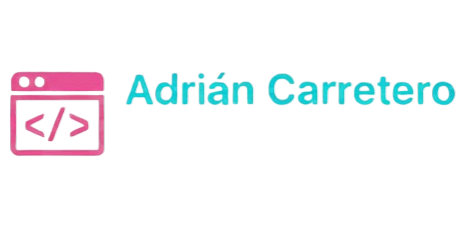

Adrián Carretero Mateo
Estudiante 2º DAW
Me considero una persona sociable que disfruta del trabajo en equipo y del intercambio de ideas.
Mi mentalidad se basa en la disciplina y la constancia que he adquirido a través del deporte,
valores que traslado a mi día a día profesional. Soy alguien proactivo y con facilidad para conectar con las personas,
siempre enfocado en aportar soluciones positivas en entornos colaborativos.